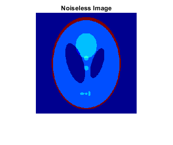
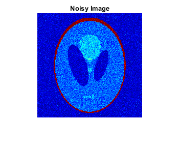
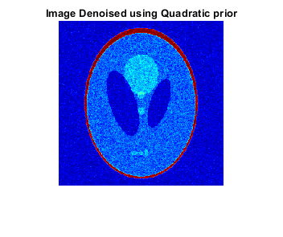
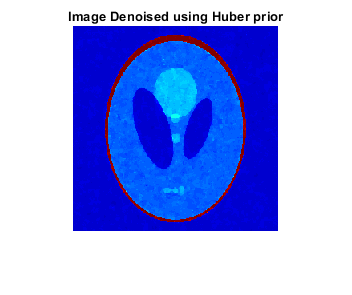
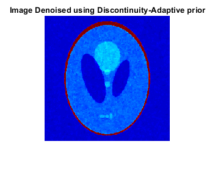
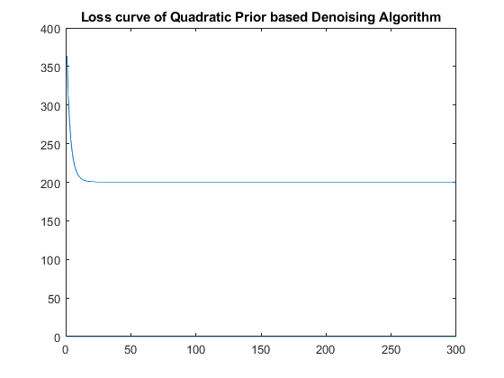
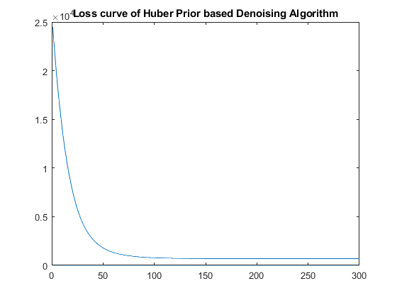
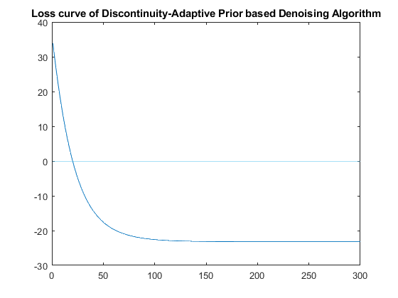

Z = load("../data/assignmentImageDenoisingPhantom.mat");
Noisy = Z.imageNoisy;
Gt = Z.imageNoiseless;
RMSE_initial = sqrt(sum(sum((abs(Noisy)-abs(Gt)).^2)))/sqrt(sum(sum(abs(Gt).^2)));
fprintf('The RRMSE between the noisy and the noiseless image is %d \n\n', RMSE_initial);
alpha_1 = 0.1;
gamma_1 = 0.1;
alpha_2 = 0.91;
gamma_2 = 0.007;
alpha_3 = 0.926;
gamma_3 = 0.006;
fprintf('For the Quadratic MRF Prior, the optimal values are: alpha = %d \n', alpha_1);
fprintf('For the Discontinuity-Adaptive Huber MRF Prior, the optimal values are: alpha = %d, gamma = %d \n', alpha_2, gamma_2);
fprintf('For the Discontinuity-Adaptive MRF Prior, the optimal values are: alpha = %d, gamma = %d \n\n', alpha_3, gamma_3);
[denoisedImg1, loss_History_1] = Q1(Noisy, alpha_1, gamma_1, 1);
[denoisedImg1_1, ~] = Q1(Noisy, 1.2*alpha_1, gamma_1, 1);
[denoisedImg1_2, ~] = Q1(Noisy, 0.8*alpha_1, gamma_1, 1);
RMSE1 = sqrt(sum(sum((abs(denoisedImg1)-abs(Gt)).^2)))/sqrt(sum(sum(abs(Gt).^2)));
RMSE1_1 = sqrt(sum(sum((abs(denoisedImg1_1)-abs(Gt)).^2)))/sqrt(sum(sum(abs(Gt).^2)));
RMSE1_2 = sqrt(sum(sum((abs(denoisedImg1_2)-abs(Gt)).^2)))/sqrt(sum(sum(abs(Gt).^2)));
fprintf('Quadratic MRF prior: RMSE(optimum_alpha) = %d \n', RMSE1)
fprintf('Quadratic MRF prior: RMSE(1.2*optimum_alpha) = %d \n', RMSE1_1)
fprintf('Quadratic MRF prior: RMSE(0.8*optimum_alpha) = %d \n\n', RMSE1_2)
[denoisedImg2, loss_History_2] = Q1(Noisy, alpha_2, gamma_2, 2);
[denoisedImg2_1, ~] = Q1(Noisy, 1.2*alpha_2, gamma_2, 2);
[denoisedImg2_2, ~] = Q1(Noisy, 0.8*alpha_2, gamma_2, 2);
[denoisedImg2_3, ~] = Q1(Noisy, alpha_2, 1.2*gamma_2, 2);
[denoisedImg2_4, ~] = Q1(Noisy, alpha_2, 0.8*gamma_2, 2);
RMSE2 = sqrt(sum(sum((abs(denoisedImg2)-abs(Gt)).^2)))/sqrt(sum(sum(abs(Gt).^2)));
RMSE2_1 = sqrt(sum(sum((abs(denoisedImg2_1)-abs(Gt)).^2)))/sqrt(sum(sum(abs(Gt).^2)));
RMSE2_2 = sqrt(sum(sum((abs(denoisedImg2_2)-abs(Gt)).^2)))/sqrt(sum(sum(abs(Gt).^2)));
RMSE2_3 = sqrt(sum(sum((abs(denoisedImg2_3)-abs(Gt)).^2)))/sqrt(sum(sum(abs(Gt).^2)));
RMSE2_4 = sqrt(sum(sum((abs(denoisedImg2_4)-abs(Gt)).^2)))/sqrt(sum(sum(abs(Gt).^2)));
fprintf('Discontinuity-Adaptive Huber MRF prior: RMSE(optimum_alpha, optimum_gamma) = %d \n', RMSE2)
fprintf('Discontinuity-Adaptive Huber MRF prior: RMSE(1.2*optimum_alpha, optimum_gamma) = %d \n', RMSE2_1)
fprintf('Discontinuity-Adaptive Huber MRF prior: RMSE(0.8*optimum_alpha, optimum_gamma) = %d \n', RMSE2_2)
fprintf('Discontinuity-Adaptive Huber MRF prior: RMSE(optimum_alpha, 1.2*optimum_gamma) = %d \n', RMSE2_3)
fprintf('Discontinuity-Adaptive Huber MRF prior: RMSE(optimum_alpha, 0.8*optimum_gamma) = %d \n\n', RMSE2_4)
[denoisedImg3, loss_History_3] = Q1(Noisy, alpha_3, gamma_3, 3);
[denoisedImg3_1, ~] = Q1(Noisy, 1.2*alpha_3, gamma_3, 3);
[denoisedImg3_2, ~] = Q1(Noisy, 0.8*alpha_3, gamma_3, 3);
[denoisedImg3_3, ~] = Q1(Noisy, alpha_3, 1.2*gamma_3, 3);
[denoisedImg3_4, ~] = Q1(Noisy, alpha_3, 0.8*gamma_3, 3);
RMSE3 = sqrt(sum(sum((abs(denoisedImg3)-abs(Gt)).^2)))/sqrt(sum(sum(abs(Gt).^2)));
RMSE3_1 = sqrt(sum(sum((abs(denoisedImg3_1)-abs(Gt)).^2)))/sqrt(sum(sum(abs(Gt).^2)));
RMSE3_2 = sqrt(sum(sum((abs(denoisedImg3_2)-abs(Gt)).^2)))/sqrt(sum(sum(abs(Gt).^2)));
RMSE3_3 = sqrt(sum(sum((abs(denoisedImg3_3)-abs(Gt)).^2)))/sqrt(sum(sum(abs(Gt).^2)));
RMSE3_4 = sqrt(sum(sum((abs(denoisedImg3_4)-abs(Gt)).^2)))/sqrt(sum(sum(abs(Gt).^2)));
fprintf('Discontinuity-Adaptive MRF prior: RMSE(optimum_alpha, optimum_gamma) = %d \n', RMSE3)
fprintf('Discontinuity-Adaptive MRF prior: RMSE(1.2*optimum_alpha, optimum_gamma) = %d \n', RMSE3_1)
fprintf('Discontinuity-Adaptive MRF prior: RMSE(0.8*optimum_alpha, optimum_gamma) = %d \n', RMSE3_2)
fprintf('Discontinuity-Adaptive MRF prior: RMSE(optimum_alpha, 1.2*optimum_gamma) = %d \n', RMSE3_3)
fprintf('Discontinuity-Adaptive MRF prior: RMSE(optimum_alpha, 0.8*optimum_gamma) = %d \n\n', RMSE3_4)
figure();
imshow(Gt)
colormap(jet)
title('Noiseless Image')
figure();
imshow(Noisy)
colormap(jet)
title('Noisy Image')
figure();
imshow(denoisedImg1)
colormap(jet)
title('Image Denoised using Quadratic prior')
figure();
imshow(denoisedImg2)
colormap(jet)
title('Image Denoised using Huber prior')
figure();
imshow(denoisedImg3)
colormap(jet)
title('Image Denoised using Discontinuity-Adaptive prior')
figure();
plot(loss_History_1)
title('Loss curve of Quadratic Prior based Denoising Algorithm')
figure();
plot(loss_History_2)
title('Loss curve of Huber Prior based Denoising Algorithm')
figure();
plot(loss_History_3)
title('Loss curve of Discontinuity-Adaptive Prior based Denoising Algorithm')
The RRMSE between the noisy and the noiseless image is 2.985792e-01
For the Quadratic MRF Prior, the optimal values are: alpha = 1.000000e-01
For the Discontinuity-Adaptive Huber MRF Prior, the optimal values are: alpha = 9.100000e-01, gamma = 7.000000e-03
For the Discontinuity-Adaptive MRF Prior, the optimal values are: alpha = 9.260000e-01, gamma = 6.000000e-03
Quadratic MRF prior: RMSE(optimum_alpha) = 2.812187e-01
Quadratic MRF prior: RMSE(1.2*optimum_alpha) = 2.815378e-01
Quadratic MRF prior: RMSE(0.8*optimum_alpha) = 2.817322e-01
Discontinuity-Adaptive Huber MRF prior: RMSE(optimum_alpha, optimum_gamma) = 2.365853e-01
Discontinuity-Adaptive Huber MRF prior: RMSE(1.2*optimum_alpha, optimum_gamma) = 2.408220e-01
Discontinuity-Adaptive Huber MRF prior: RMSE(0.8*optimum_alpha, optimum_gamma) = 2.598681e-01
Discontinuity-Adaptive Huber MRF prior: RMSE(optimum_alpha, 1.2*optimum_gamma) = 2.372119e-01
Discontinuity-Adaptive Huber MRF prior: RMSE(optimum_alpha, 0.8*optimum_gamma) = 2.370912e-01
Discontinuity-Adaptive MRF prior: RMSE(optimum_alpha, optimum_gamma) = 2.388242e-01
Discontinuity-Adaptive MRF prior: RMSE(1.2*optimum_alpha, optimum_gamma) = 2.396644e-01
Discontinuity-Adaptive MRF prior: RMSE(0.8*optimum_alpha, optimum_gamma) = 2.655583e-01
Discontinuity-Adaptive MRF prior: RMSE(optimum_alpha, 1.2*optimum_gamma) = 2.392159e-01
Discontinuity-Adaptive MRF prior: RMSE(optimum_alpha, 0.8*optimum_gamma) = 2.393993e-01
       